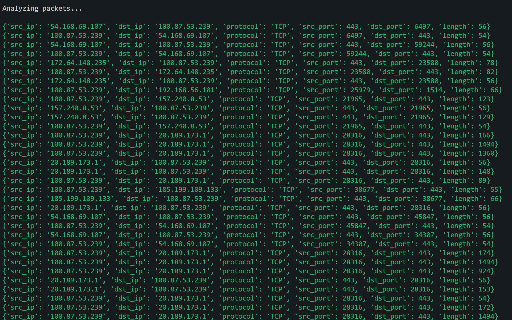
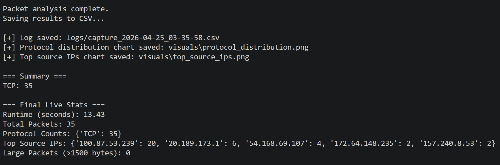
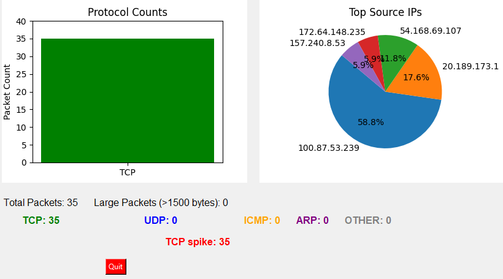
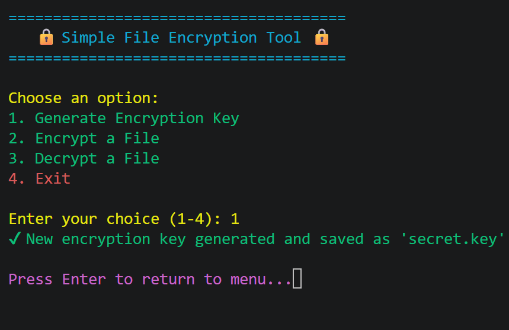
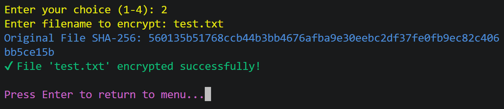
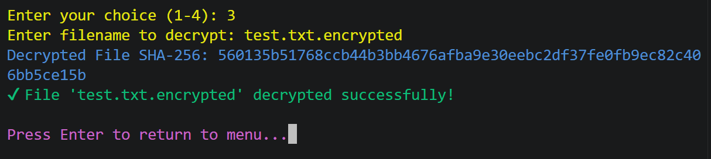

About Me
Cybersecurity postgraduate student at RMIT University with hands-on experience in network traffic analysis, threat detection, and security operations. Skilled in tools such as Wireshark, Nmap, and Python for analysing and monitoring network activity.
Passionate about Security Operations (SOC), incident response, and identifying suspicious patterns in network environments. Actively seeking opportunities to apply and grow practical cybersecurity skills.
Projects
Real-Time Network Traffic Analyzer
Developed an advanced network monitoring tool to capture, analyse, and visualise live packet-level traffic using Scapy. Implemented protocol classification (TCP, UDP, ICMP, ARP), real-time dashboards (CLI + GUI), and anomaly detection through large-packet alerts. Enabled structured logging of traffic data into CSV files and generated visual insights for protocol distribution and top source IPs.
Key Features:
- Live packet capture with custom filtering (BPF support)
- Real-time CLI dashboard with traffic statistics and alerts
- GUI dashboard with visualisations using Matplotlib
- Detection of abnormal packet sizes (potential anomalies)
- CSV logging for analysis and reporting
Tools: Python, Scapy, Matplotlib, Tkinter, Colorama
Output & Visualisation:



View ProjectSecure File Encryption Tool
Developed a secure file encryption system implementing AES-128 encryption using Fernet to protect sensitive data. Integrated SHA-256 hashing for file integrity verification and implemented logging mechanisms for auditing and forensic analysis of file operations.
Key Features:
- Secure file encryption and decryption using symmetric key cryptography
- SHA-256 hashing for integrity verification
- Activity logging for auditing and traceability
- Error handling for invalid keys and corrupted files
- User-friendly CLI with color-coded interface
Tools: Python, Fernet (AES-128), SHA-256, Colorama
Tool Interface & Workflow:



View ProjectMEDIPAL - Secure Healthcare Portal
Designed and developed the frontend of a healthcare web platform to enable seamless interaction between patients and doctors. Focused on creating an intuitive user interface, structured workflows, and secure interaction design for handling sensitive healthcare data.
Key Features:
- User-friendly patient and doctor interfaces
- Appointment scheduling and interaction workflows
- Role-based UI design for different user types
- Emphasis on secure and structured data interaction
Tools: HTML, CSS, JavaScript, PHP
Preview:
 View Project
View Project
Skills
Security Tools: Wireshark, Nmap, Kali Linux
Programming: Python, C
Concepts: Network Traffic Analysis, Threat Detection, Incident Analysis, Vulnerability Assessment, OWASP Top 10, SIEM Fundamentals
Networking: TCP/IP, Packet Analysis, Network Security Fundamentals
Experience
Cyber Security Intern
ES Ethic Secur SofTec Pvt Ltd | Aug 2024 – Sept 2024
- Performed network traffic analysis using Wireshark to identify suspicious patterns and anomalies
- Assisted in vulnerability assessment and basic threat identification
- Applied OWASP Top 10 principles to analyse web application security risks
- Supported security operations by documenting incidents and recommending mitigation steps
Contact
Email: shreyasram0308@gmail.com
GitHub: github.com/Shreyas993
LinkedIn: linkedin.com/in/shreyas-ramkumar-0a2529267
Portfolio: shreyas993.github.io